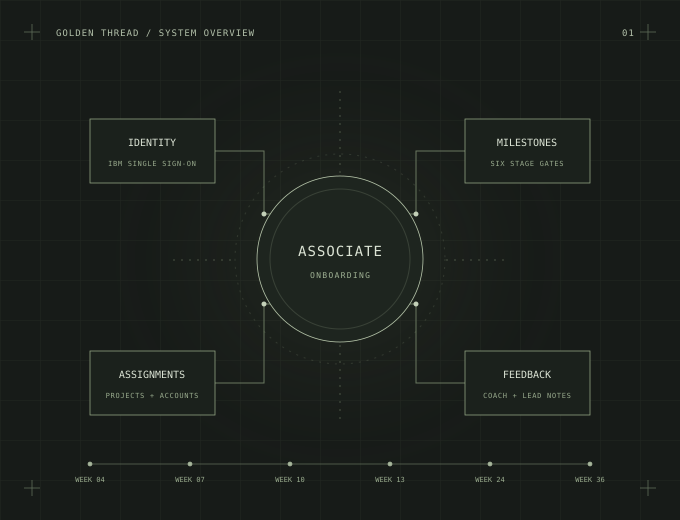

IBM
Golden Thread
Golden Thread
Helped turn onboarding spreadsheets into a shared application.
Contributed to Golden Thread, an associate onboarding and milestone tracker. Built IBM sign-in and session flows, tested REST APIs, and improved data cleanup.
View project detailsClose project details
Golden Thread / September 2026
FNC Associate Onboarding & Milestone Tracker
Golden Thread is an internal IBM web app that brings an associate’s first year into one place. Coaches and project leads can track onboarding milestones, project assignments, and notes without maintaining separate spreadsheets.
A team of about 10 IBM associates built the application over several weeks in September 2026. My contributions focused on authentication, API testing, and data integrity.
My contributions
- Authentication & sessions
- Integrated IBM single sign-on into the Angular app, including the authentication service, route guard, and sign-in screen. Fixed logout, added automatic logout after inactivity, and built the user profile page.
- API testing & data integrity
- Wrote a Postman collection covering the REST endpoints. Updated associate deletion to clean up assignments, milestone progress, and comments in one transaction, resolving foreign-key failures. Updated project deletion to remove its assignments.
- Filter test data
- Added location seed data so the team could test location filtering.
What the application does
Tracks six milestone stages across an associate’s first year, from the week-four kickoff through deployment readiness, integration, meaningful work, and quarterly check-ins. The app includes dashboard filters, associate detail pages, project assignments, and comments attributed to coaches and project leads.
Technology
- Angular 19
- TypeScript
- Java 21
- Spring Boot
- Spring Data JPA
- PostgreSQL
- Podman
- nginx
Team project. Contributions above describe my work; the application overview describes the team’s product.